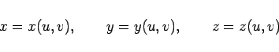
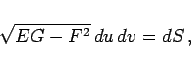
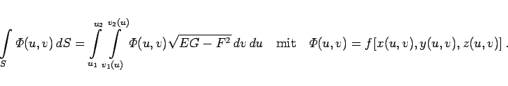
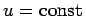
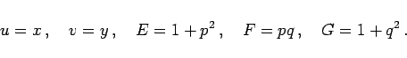

Inhalt Index DeskTop Bronstein

 Integralrechnung Oberflächenintegrale Oberflächenintegrale 1. Art Berechnung des Oberflächenintegrals 1. Art
Integralrechnung Oberflächenintegrale Oberflächenintegrale 1. Art Berechnung des Oberflächenintegrals 1. Art


Ist die Fläche S durch die Gleichungen
|  | (8.152a) |
in Parameterform vorgegeben (s. Abbildung), dann gilt
wobei die Funktionen E,F und G wie folgt berechnet werden (s. auch Abschnitt Linienelement auf einer Fläche):
Für das Flächenelement in Parameterform gilt dann
|  | (8.152c) |
während der Variabilitätsbereich von u und v ist, der der Fläche S entspricht. Zur Berechnung des Integrals werden der Reihe nach die beiden Integrale für v und u integriert:
|  | (8.152d) |
Dabei sind u1 und u2 die Koordinaten der äußersten Koordinatenlinien , zwischen denen das Flächenstück S eingeschlossen ist (s. Abbildung). Mit v = v1(u) und v = v2(u) sind die Gleichungen der Kurven AmB und AnB bezeichnet, die das Flächenstück S begrenzen.
Die Formel (8.151a) ist ein Spezialfall von (8.152b) für
|  | (8.153) |